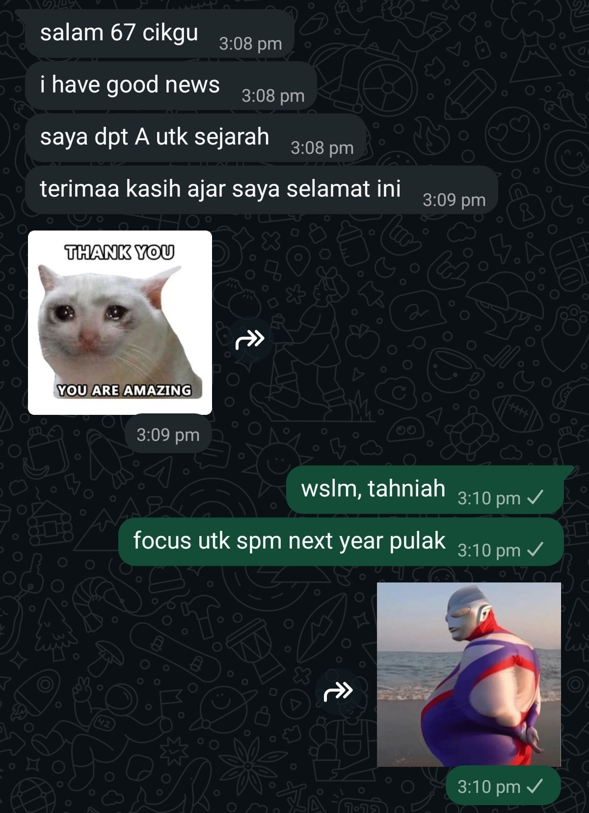

<!doctype html>
<html lang="ms">
<head>
<meta charset="utf-8">
<title>Titik Sejarah Testimoni 02</title>
<style>
@font-face{font-family:'Marker';src:url(fonts/PermanentMarker.woff2) format('woff2')}
@font-face{font-family:'Caveat';src:url(fonts/Caveat.woff2) format('woff2');font-weight:400 700}
@font-face{font-family:'Baloo';src:url(fonts/Baloo2.woff2) format('woff2');font-weight:400 800}
html,body{margin:0;width:1080px;height:1920px;overflow:hidden}
/* Same notebook-paper base and screenshot frame as poster_testi01.html */
#c{position:relative;width:1080px;height:1920px;overflow:hidden;background:#F3EBDD url(paper.jpg);color:#172C63}
#c::before{content:'';position:absolute;inset:0;background:
  linear-gradient(to right,transparent 108px,rgba(201,52,54,.4) 108px,rgba(201,52,54,.4) 111px,transparent 111px),
  repeating-linear-gradient(to bottom,transparent 0 62px,rgba(23,44,99,.08) 62px 64px)}
.abs{position:absolute}
.abs svg{display:block;width:100%;height:auto;overflow:visible}
.ctr{left:0;width:1080px;text-align:center}
.red{color:#C93436}
.chip{display:inline-block;background:#172C63;color:#F5C928;font-family:'Marker';font-size:44px;padding:8px 32px 12px;border-radius:14px;box-shadow:7px 8px 0 #C93436}
.head{font-family:'Marker';font-size:86px;line-height:1.0;white-space:nowrap}
.gA{display:inline-block;background:#C93436;color:#F3EBDD;border:7px solid #172C63;border-radius:50%;width:118px;height:118px;line-height:108px;text-align:center;font-size:96px;box-shadow:7px 8px 0 #172C63;transform:rotate(-8deg);margin:0 6px;vertical-align:-14px}
.shot{left:270px;top:545px;width:540px;box-sizing:border-box;padding:16px;background:#172C63;border-radius:30px;box-shadow:12px 14px 0 #F5C928;transform:rotate(-1.5deg)}
.shot img{display:block;width:100%;border-radius:16px}
.tape{position:absolute;width:150px;height:44px;background:rgba(243,235,221,.9);border:2px solid rgba(23,44,99,.15)}
.note{font-family:'Caveat';font-weight:700;font-size:44px;color:#172C63;line-height:.95;text-align:center}
.cta1{font-family:'Marker';font-size:78px;line-height:1.02;white-space:nowrap}
.hl{background:linear-gradient(to bottom,transparent 52%,#F5C928 52%,#F5C928 94%,transparent 94%);padding:0 12px}
.cta2{font-family:'Caveat';font-weight:700;font-size:54px;color:#C93436;line-height:1}
.prod{display:inline-block;font-family:'Baloo';font-weight:800;font-size:34px;line-height:1.1;background:#FFFDF7;border:4px solid #172C63;border-radius:999px;padding:8px 26px 6px}
.foot{left:90px;width:900px;top:1715px;display:flex;align-items:center;justify-content:space-between}
.brand{display:flex;align-items:center;gap:16px}
.brand .dp{width:96px;height:96px;border:5px solid #172C63;background:#fff url(../assets/brand/titik-sejarah-dp-square.jpg) center/cover;box-shadow:6px 7px 0 #172C63;flex:none}
.brand .t{font-family:'Marker';font-size:42px;line-height:.95}
.brand .tg{font-family:'Caveat';font-weight:700;font-size:30px;color:#C93436;margin-top:4px}
.cta{display:flex;align-items:center;gap:12px;background:#C93436;color:#F3EBDD;border:4px solid #172C63;border-radius:20px;box-shadow:7px 8px 0 #172C63;padding:8px 22px 10px;transform:rotate(-1.5deg)}
.cta .l1{font-family:'Baloo';font-weight:700;font-size:24px;line-height:1}
.cta .l2{font-family:'Marker';font-size:42px;line-height:1.05;color:#F5C928}
.cta svg{width:54px;display:block}
</style>
<script src="../node_modules/roughjs/bundled/rough.js"></script>
</head>
<body>
<div id="c"></div>
<script type="module">
import { D, R, C, setSeed } from './doodles.js';
const c = document.getElementById('c');
const add = (html, css, cls = 'abs') => { const d = document.createElement('div'); d.className = cls; d.style.cssText = css; d.innerHTML = html; c.appendChild(d); return d; };
const svg = (w, h, body) => `<svg viewBox="0 0 ${w} ${h}" xmlns="http://www.w3.org/2000/svg">${body}</svg>`;
await document.fonts.ready;
setSeed(202);

// 1) Label + headline from the student's own message ("saya dpt A utk sejarah")
add('<span class="chip">TESTIMONI PELAJAR</span>', 'top:168px;transform:rotate(-2deg)', 'abs ctr');
add('DAPAT <span class="gA">A</span> UNTUK<br><span class="red">SEJARAH!</span>', 'top:250px;transform:rotate(-2deg)', 'abs ctr head');

// 2) The real conversation (full screenshot, unedited)
add('', '', 'abs shot');
add('', 'left:285px;top:527px;transform:rotate(-10deg)', 'abs tape');
add('', 'left:650px;top:523px;transform:rotate(8deg)', 'abs tape');
// margin notes + doodles
add('mesej<br>sebenar<br>pelajar!', 'left:845px;top:600px;width:200px;transform:rotate(6deg)', 'abs note');
add(D.arrow(110, 10, 10, 80, { w: 120, h: 90, color: C.red, sw: 6, bend: -0.25 }), 'left:845px;top:755px;width:90px');
add(D.star(C.gold), 'left:60px;top:560px;width:120px;transform:rotate(-12deg)');
add(D.heart(C.red), 'left:70px;top:830px;width:110px;transform:rotate(-10deg)');
add(D.check(C.red), 'left:80px;top:1080px;width:100px');
add(D.star(C.red), 'left:900px;top:960px;width:90px;transform:rotate(10deg)');
add(D.heart(C.gold), 'left:890px;top:1150px;width:100px;transform:rotate(12deg)');

// 3) Call to action
add('STANDBY UNTUK<br><span class="hl"><span class="red">SPM TAHUN DEPAN!!!</span></span>', 'top:1370px;transform:rotate(-1.5deg)', 'abs ctr cta1');
add('Dapatkan bahan Sejarah sekarang!', 'top:1545px', 'abs ctr cta2');
add('<span class="prod">Nota · Bank Soalan · Peta Minda · T4 &amp; T5</span>', 'top:1610px', 'abs ctr');

// 4) Brand + how to buy
add(`<div class="brand"><div class="dp"></div><div><div class="t">TITIK <span class="red">SEJARAH</span></div><div class="tg">Kenali sejarah, fahami masa kini.</div></div></div>
  <div class="cta"><svg viewBox="0 0 120 110"><path d="M10 14 Q10 4 22 4 L98 4 Q110 4 110 16 L110 64 Q110 76 98 76 L50 76 L24 102 L28 76 L22 76 Q10 76 10 64 Z" fill="#F3EBDD" stroke="#172C63" stroke-width="5"/><circle cx="38" cy="40" r="7" fill="#C93436"/><circle cx="60" cy="40" r="7" fill="#C93436"/><circle cx="82" cy="40" r="7" fill="#C93436"/></svg>
  <div><div class="l1">Nak beli?</div><div class="l2">PM di TikTok</div></div></div>`, '', 'abs foot');

await new Promise((r) => requestAnimationFrame(() => requestAnimationFrame(r)));
await Promise.all([...document.images].map((im) => (im.complete ? 0 : new Promise((r) => (im.onload = im.onerror = r)))));
window.__done = true;
</script>
</body>
</html>
